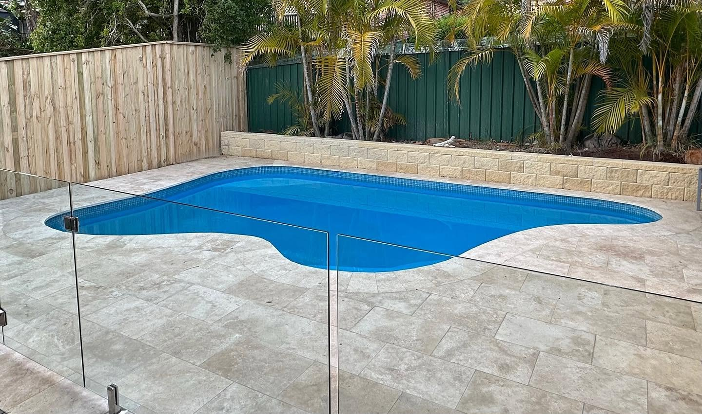
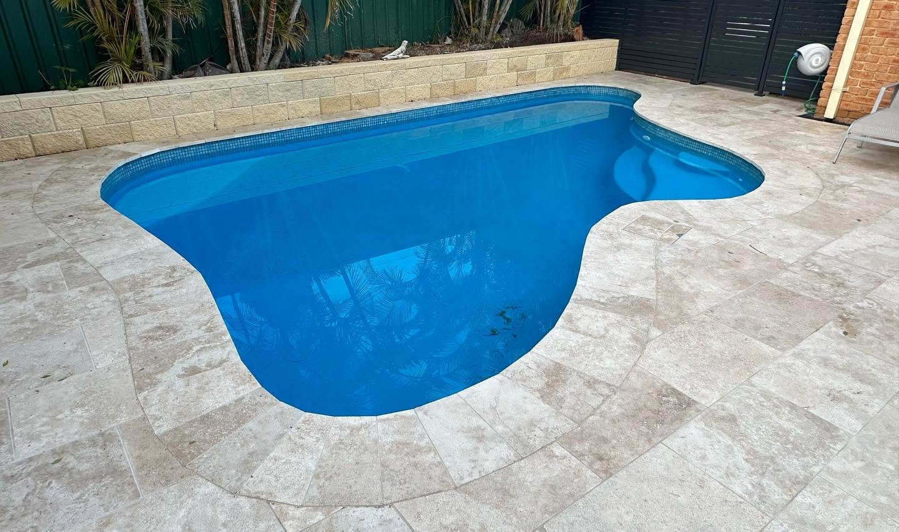
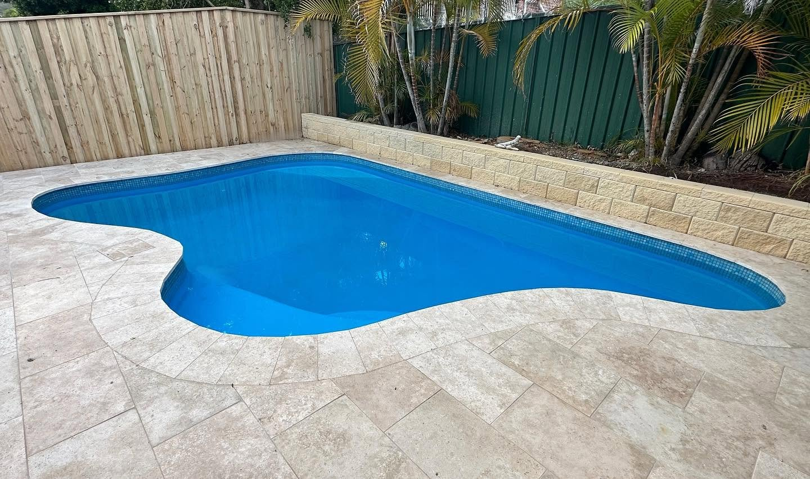
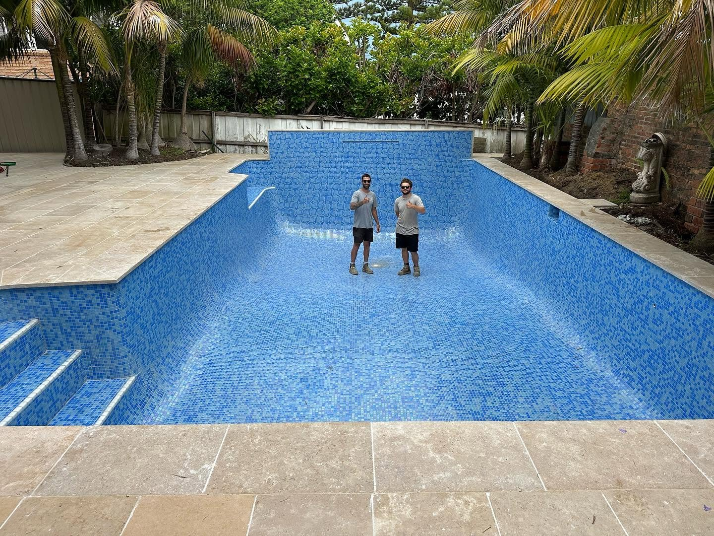
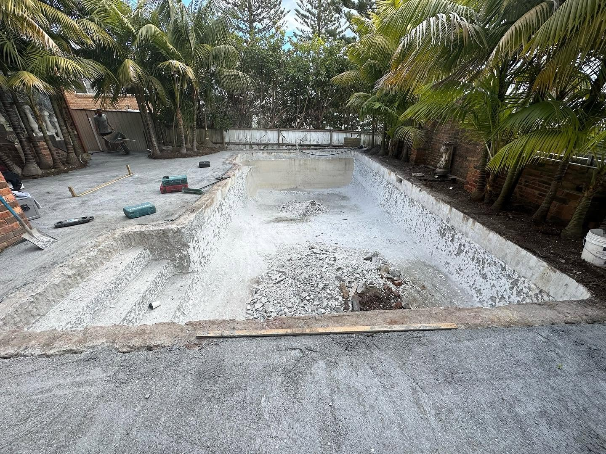
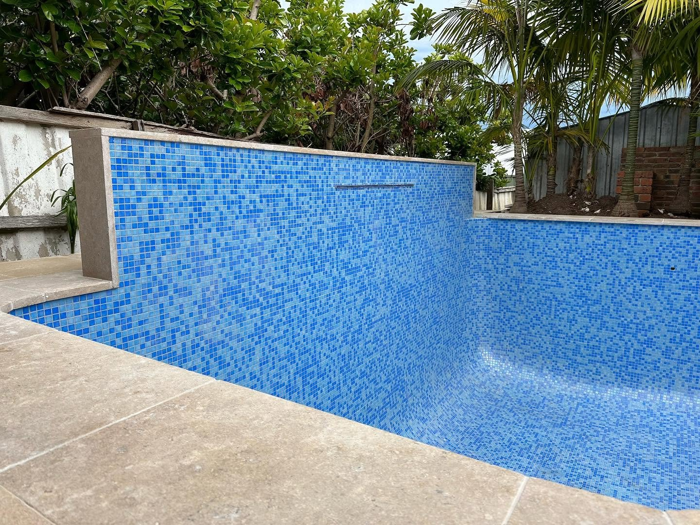
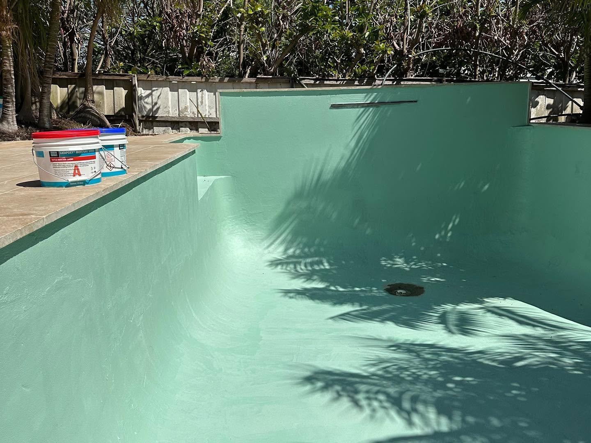

Concrete pools
Pool excavation and shell construction, set out to the shape the yard actually allows rather than a stock rectangle.
Landscape Originals is a residential landscape construction business based in Gosford. Concrete pools finished in mosaic tile, retaining walls, timber decks and paving — built from the first excavation through to the last paver.

Residential landscape construction: the excavation, the structure, the finishes. One contractor carrying the pool shell, the walls, the decking and the paving.
Pool excavation and shell construction, set out to the shape the yard actually allows rather than a stock rectangle.
Interiors lined in mosaic tile, with the waterline and surrounds finished to match the paving.
Walls that hold a cut or create a level — built to take the load and drain properly behind.
Timber decking over new or existing structure, set to the fall of the site and tied into the house.
Stone and paver laying — pool surrounds, paths and entertaining areas, cut and laid on a proper base.
Set-out, excavation and levels before anything gets built — the stage that decides how the rest sits.
Landscape construction is a sequence — get the levels and the excavation right and everything after it lands true.
Ring 0422 270 042 or email with the address and what you are hoping to build.
On site to look at access, levels, drainage and where the pool or wall can actually go.
Set out, dig, then shell, wall or deck structure — with the spoil carted as the job progresses.
Tiling, coping, paving and the final clean, then a walk around the finished work.
Finished work and the stages behind it — from an open shell to a pool ready to fill.






Ring or email with the address and a rough idea — it is easier to talk through a yard than describe it.
Gosford and the Central Coast, NSW. If you are outside that area, call and ask — it depends on the project.
Both. Pools are listed alongside retaining walls, decks and paving, and the gallery shows a pool from excavation through to a tiled, filled shell.
The business describes itself as residential landscape construction — houses and gardens rather than commercial sites.
Yes. Retaining walls, decks, pools and paving are the four core services, and they are usually built together on the same yard.
The project grid above is built from Landscape Originals' own photos, and the Facebook page carries the latest work.
Call 0422 270 042 or email landscapeoriginals@outlook.com with the address and what you have in mind.
Send the address and a few photos of the yard, or just ring — most projects start with a look at the levels.
0422 270 042Residential landscape construction · Central Coast, NSW